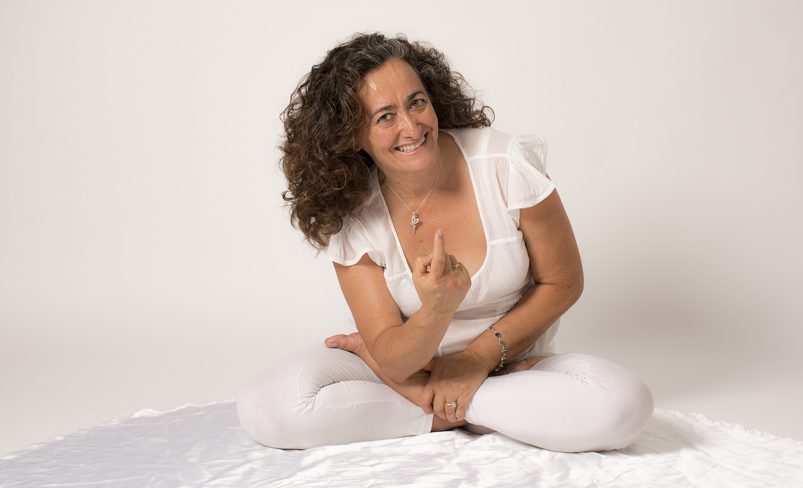

SOBRE MÍ
En el año 1.985, después de padecer grandes problemas en mi espalda debido a una escoliosis muy severa, conozco el grupo de yoga que pertenece a la G.F.U. Al comenzar a hacer yoga tres veces en semana, en un par de meses puedo dejar la rehabilitación a la que me sometía hacía más de 7 años. Esta experiencia, me hizo adentrarme en la práctica y conocimientos del yoga, hice la formación como instructora y desde 1.986 he continuado, impartiendo clases o seminarios y profundizando e investigando en sus distintas escuelas y vertientes, desarrollándome especialmente desde lo vivencial. Es cierto que el yoga tiene una gran carga filosófica y espiritual a la que no renuncio, aunque observo que la necesidad principal de las personas que se acercan a las clases es básicamente de origen emocional y físico.
A lo largo del desarrollo de esta técnica, observé una gran mejoría en personas que empiezan con problemas en la espalda, básicamente contracturas, lumbalgias, ciáticas e incluso hernias discales. Esto me llevó a querer profundizar en el yoga terapéutico. Para ello, recibo formación en ESTIRAMIENTOS DE CADENAS MUSCULARES, ANTIGIMNASIA, CORREPCION POSTURAL, DIAFROTERAPIA Y MICROGIMNASIA. Adapto todas estas técnicas a la clase de yoga, mezclando estiramientos con asanas (posturas concretas de yoga) y elaboro un método de posturas beneficiosas con ciertos retoques que incorporan estas técnicas, no dejo atrás el yoga porque siento que la estática y la concentración en cada postura aumenta el beneficio.

Con el tiempo constato como el aprender a estar parado y respirar simplemente aporta grandes beneficios a los practicantes y es más, a nivel emocional están sucediendo cosas que me llaman la atención. Paralelamente se me facilita la posibilidad de hacer una formación a nivel psicológico, me formo en TERAPIA GESTALT, como profesión de ayuda. Y desde ahí comienzo a utilizar un lenguaje que junto al pensamiento positivo, que ya estaba utilizando desde los primeros tiempos de yoga, y a la PNL (programación neurolingüística) me permite constatar como personas que vienen con estados de depresión, ansiedad y emocionalmente muy dañadas empiezan a mejorar y comienzan un auto cuidado que les beneficia, necesitando cada vez menos fármacos o incluso mejorando hasta prescindir (según prescripción de su médico) de ellos.
Con el paso de los años observo con agrado, que algunas personas vienen a yoga porque se lo recomienda su médico bien porque previamente lo ha experimentado o porque ha visto resultados muy favorables en otros pacientes. También realizo la formación en MOVIMIENTO EXPRESIVO que me habilita para dar masaje circulatorio y sensitivo, además puedo ofrecer algo más dinámico y divertido que se hace con una base musical. Siento que estoy colaborando a difundir y realizar un trabajo precioso y sanador Mi principal propósito es que gustaría difundirlo para que pudiese llegar a la mayor cantidad posible de personas y que estas pudieran comprobar los beneficios. Además, el que uno de los lugares donde ahora mismo estoy impartiendo yoga sea en las instalaciones de un club social situado en Fuenlabrada llamado Parque Granada me permite que los precios sean accesibles a todas las personas, incluso con bajo presupuesto y esto me llena de satisfacción.